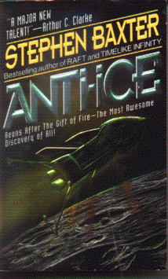

Anti-Iceby Stephen Baxter
publisher: Harper Prism
Fiction, 289 pages | 
(book cover art, Copyright ©1993 Stephen Baxter)
|
Return to the Book MenuPrevious|Next
Description:
An alternate history, where a material has been discovered that provides something akin to atomic power at the height of the steam age. Is the world ready for it this early? A story akin to the works of Jules Verne ensues.
Recommended for: History buffs, adventurists, people interested in the impact made by technology, romantics
Note: This book is out of print. You may be able to find it used online, or Mr. Howe has a couple of copies.
Did-you-read questions:
Deadline: February 1, 2005.
These should be easy questions, but you should have the questions ready and keep an eye out during your reading. Each question should be answered with 1-2 sentences.
Note: these questions are not probably not the most important part of the book! Your essay will not have to cover these questions!
- What is the name of the French woman Ned Vicars meets at the Great Exhibition?
- Where on earth does one find anti-ice?
- How does Ned get to the locked Bridge of the Phaeton?
- Where did the anti-ice originally come from, according to Traveller?
- Who was responsible for the sabotage of the Prince Albert?
Report Questions:Deadline: Peer Review Session on February 8, 2005; paper due February 10, 2005.
You should write a 3 - 4 page essay on one of the following questions. Your essay should include examples and references to the book, unless otherwise specified. Page number references are sufficient for citing material from the primary book. If you use outside materials, cite your sources in full. If you would rather write on a different topic, you may, but clear it with Mr. Howe or Ms. Sullivan first.
- What sort of man is Ned Vicars? Is he intelligent or a fool? Is he a hero or a victim of circumstance? Should we admire him or pity him?
- How well did the world of the late 19th century in this book fare with this overwhelming power, compared to the real world of the early 20th century? Justify your case.
- Other than telling a good yarn, what objectives do you think the author is trying to meet in this story? Is there a message for those of us in our reality?
- Do you agree with Traveller's final decision?
Graphic and Presentation:
Deadline: February 21 - March 3, 2005.You will give a 10 minute presentation on both of the following:
- Convince your peers that they should (or should not) read this book. (This may include a brief summary of the book.) Give examples of what was cool or worthwhile in the book, and what you got out of it (or didn't).
- Describe a (realistic) science idea that you learned about in this book, citing information from at least 2 external sources (other than the dictionary). If you would like help choosing or understanding an idea from your book, you are invited to come talk to Mr. Howe or Ms. Sullivan.
Note: This presentation should not be just a reading of your paper!Along with this presentation, you should have a graphic that will go with it. A Power Point presentation is recommended, but if you have a special idea for a something else, such as a model, an original video presentation, or a well done drawing/ painting/ sculpture/ etc., you may do so, provided it involves a similar level of effort and polish. Speak to Mr. Howe or Ms. Sullivan first if you are considering an alternate graphic format to the Power Point.
Return to the Book MenuPrevious|Next